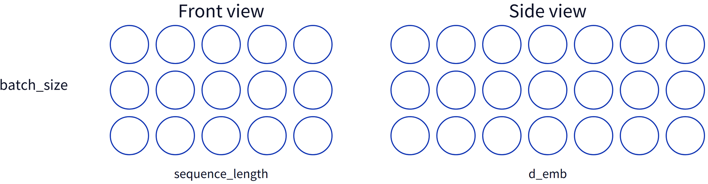
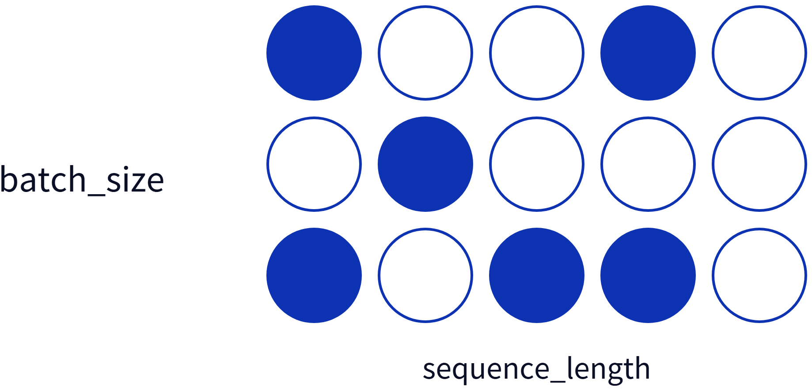
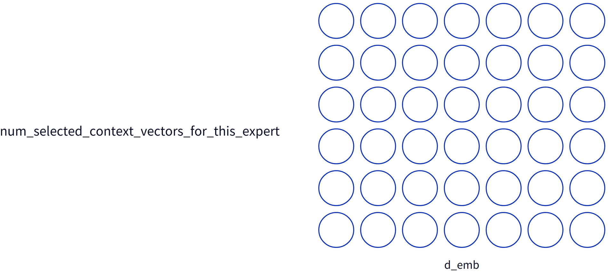
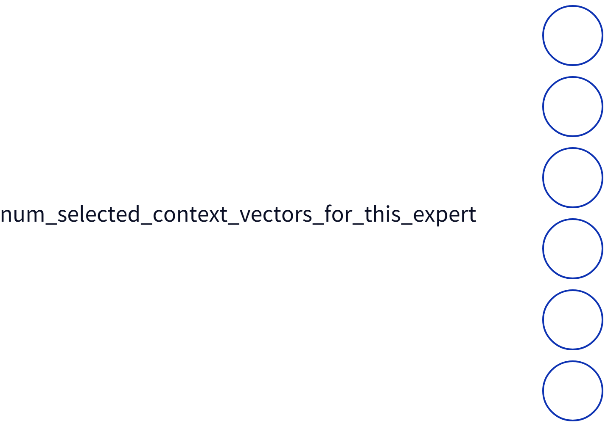
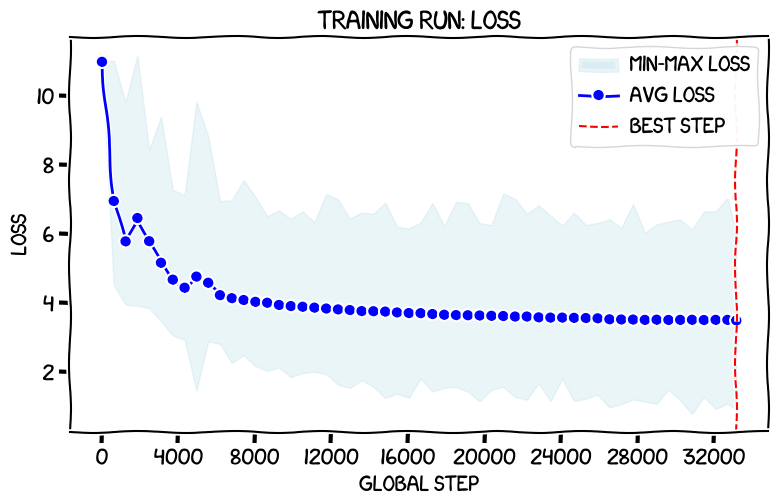
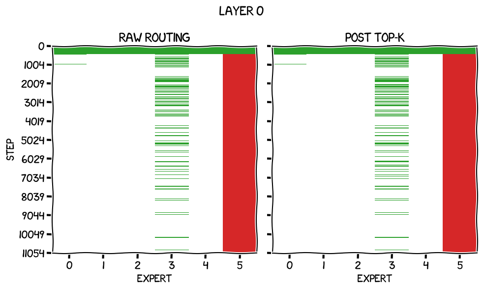
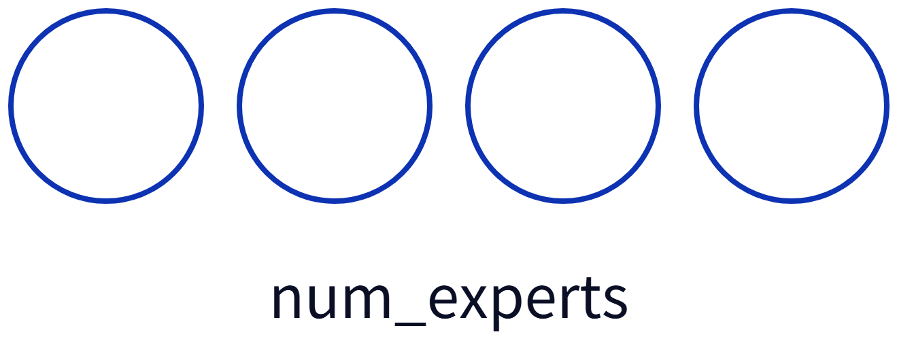
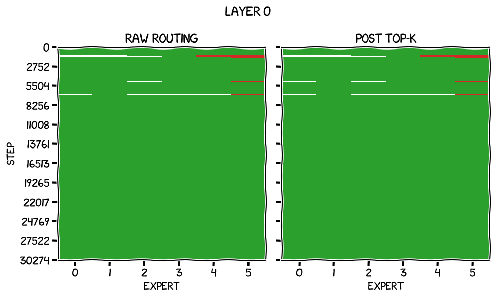
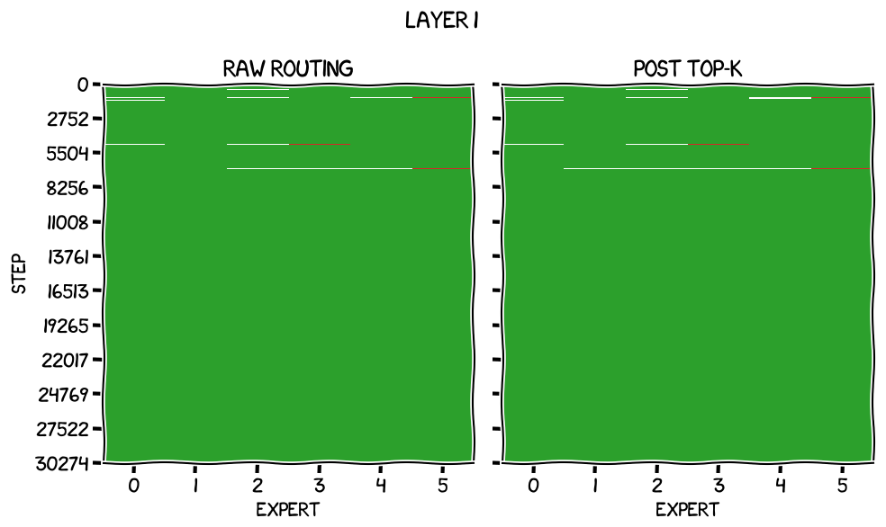
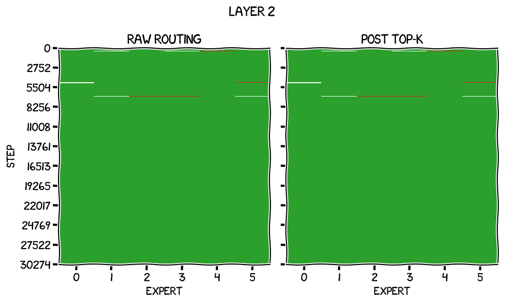

这是一次从零开始的改造实验：作者在Raschka《Build a Large Language Model (from Scratch)》的GPT-2代码上，自己加了一套混合专家（MoE）支持，包括让它真正能均衡负载的辅助损失，然后用一张RTX 3090从零训练。六篇连载的要点压缩在这一篇里。
最终模型是6个专家、每token激活2个，446M总参数、每token激活220M，训练8.9B token、耗时八天，测试损失3.254，IFT指令跟随评测排第3。下面按「为什么要改、路由器怎么设计、怎么把token送进专家、怎么让专家不偏食、结果如何」走一遍完整链路。
MoE里的「专家」不是分领域的子模型，而是把每个Transformer块里的前馈网络（FFN）换成多个彼此独立的FFN。在GPT-2里，FFN的参数量是注意力机制的两倍：注意力负责想清楚该思考什么，FFN才是真正思考的地方。而这些FFN本身简单得意外，就是两层线性层中间夹一个GELU，先把维度扩大四倍再投影回来。
每个上下文向量只激活其中一部分专家，所以参数量上去了、单token算力却降下来了。代价是所有专家都得留在内存里，因为路由是按上下文向量做的，一个batch里大概率会用到大部分甚至全部专家。
「混合专家」这个词容易让人想到一堆各自精通某个领域的子模型，但这里不是：专家的层级低得多，各自擅长的往往是训练中它们自己发现的、说不出名目的东西。这条路线可以追到1991年的《Adaptive Mixtures of Local Experts》，以及后来的《Outrageously Large Neural Networks》、《GShard》和《Switch Transformers》。
结构和收益都清楚了，难的是实现：路由器具体怎么挑专家、怎么挑得高效，以及最关键的，怎么把它训练得会挑。
路由器其实就是一层线性层：输入维度d_emb，输出维度等于专家总数n：
self.router = nn.Linear(cfg["emb_dim"], self.num_experts, bias=False)对每个上下文向量，它输出n个原始打分，也就是logits。线性层作用在张量的最后一维上，也就是对每个上下文向量独立运算：

理解这些张量是后面的关键。把形状为batch_size、sequence_length、d_emb的三阶张量想象成一个长方体：正视图是batch × 序列长度的网格，每个格子对应一个上下文向量；从格子往回扎进长方体的那条「芯」，就是这个上下文向量在各专家上的那串logits。后面所有的掩码、切片、广播，都能在这张图上验证形状对不对。
拿到logits之后，取其中最大的k个，把上下文向量送去对应的专家，再把它们的输出合并。
但「挑top-k再相加」有个致命问题：路由器那一步计算不在从损失回溯的计算图上。反向传播从输出上下文向量出发，穿过合并步骤、穿过被选中的专家，回到输入上下文向量，然后就继续往前一层走了；选专家的那一步是一条死路，拿不到任何梯度。于是一个随机初始化的模型会一直随机分配专家。
解决办法第一次出现在1991年的《Adaptive Mixtures of Local Experts》：把路由器的输出当作权重，对全部专家的输出加权求和。这样权重就成了回传路径的一部分，路由器能被训练。

不过那篇论文的动机和现在完全不同：他们关心的不是省算力，而是让网络的不同部分各自专精于特定任务，所以对每个输入都会跑完所有专家。他们也意识到这么做会让「责任」变得模糊：如果某个专家真正懂一项任务，其余专家也都在出力，除非能把它们的权重训练到恰好为零，否则为了损失好看，它们就得学着互相抵消。他们的方案是在输出上加一个门控函数，把未选中专家的结果直接丢掉。
代价也很清楚：每个token都要跑完所有专家，稀疏省算力的好处就没了。真正让MoE变稀疏的，是2017年那篇论文。
真正想要的是一个部分为零的权重向量：除top-k之外全为零，这样运行时就能跳过这些专家，而结果与不跳过完全一致。
2017年的《Outrageously Large Neural Networks》给了做法：既然某个值经过softmax后要为零，那它进来时就得是负无穷。于是先建一个全负无穷的同形状张量，再把top-k的原始logits散布回去，最后过softmax。整个流程在代码里只有几行：
top_k_values, top_k_indices = torch.topk(
routing_logits,
k=self.num_active_experts,
dim=-1
)top_k_routing_logits = torch.full_like(routing_logits, -torch.inf)top_k_routing_logits.scatter_(dim=-1, index=top_k_indices, src=top_k_values)expert_weights = torch.softmax(top_k_routing_logits, dim=-1)这里的形状关系值得留意：routing_logits是「batch × 序列长度 × 专家数」，topk沿最后一维取出k个最大值与下标，得到两个「batch × 序列长度 × k」的张量；它们的前两维与routing_logits完全对齐，scatter_ 正是靠这个对齐把值填回正确位置。
得到的expert_weights就是稀疏路由权重：未选中的专家为零，被选中的专家是零到一之间的正数。

这里有个必须防的坑：如果k = 1，非top-k全被掩成负无穷，softmax的结果恒为1，与原始logits无关；导数恒为零，路由器等于没学。Switch Transformers换了顺序，先softmax再置零，来绕开这个问题；作者选择沿用「先负无穷再softmax」，并在代码里加断言禁止num_active_experts小于2。
他自己试过的另一条路，也就是「把所有小于top-k最小值的logits都替换成负无穷」，有一个隐蔽的bug：一旦出现并列，比如某个上下文向量的logits是0.4254、0.4254、0.5106、-0.1385，最小的top-2值也是0.4254，按这个规则会得到三个激活专家而不是两个。这就是最终改用full_like加scatter_ 的原因。
实现上作者选了最直白的做法：逐个专家遍历，而不是试图把不同专家并行调度。先建一个与输入同形状的全零累加器：
all_outputs = torch.zeros_like(xs)然后对每个专家，用它的权重切片做比较，得到一个布尔掩码：
this_expert_mask = expert_weights[:, :, expert_ix] > 0这个掩码标出哪些上下文向量要跑这个专家：True表示该专家对这个上下文向量是激活的。

接着用掩码从xs里把对应的上下文向量取出来。注意这一步之后，张量变成了一列形状为选中数量乘d_emb的数据，与原始xs的形状对应关系就丢了：
this_expert_results, _ = expert(xs[this_expert_mask])
同一个掩码还能取出该专家的权重，取出来是一列数；要乘到结果上，必须先unsqueeze成列向量，因为PyTorch的广播是从右往左对齐维度的：
this_expert_weights = expert_weights[this_expert_mask, expert_ix].unsqueeze(1)
最后一步最关键：布尔掩码不仅能取值，也能赋值，而all_outputs与xs同形，所以同一个掩码作用上去就能把结果加回原位：
all_outputs[this_expert_mask] += this_expert_results * this_expert_weights一行完成加权累加，形状对应关系自动恢复。所有专家跑完之后，all_outputs里就是每个上下文向量在各激活专家上的加权求和结果。
顺带两个实现细节：router不带偏置，作者说只是「感觉现在流行这样」；专家必须放进nn.ModuleList，否则PyTorch不会把它们注册为包含参数的子模块，优化器用model.parameters() 时就永远更新不到它们。
作者先做了一次没有辅助损失的实验性训练：6个专家、每token激活2个，batch只能开到3，用32步梯度累积维持全局batch 96，3.2B token跑了两天半多，共217,540秒、约15k token/s。

最终运行损失降到3.211附近，测试损失3.502。这个成绩比他训过的163M密集模型好，但按Chinchilla视角明显训练不足：3.2B token对163M模型刚好，而这个是446M总参数、每token激活220M。
更重要的是专家负载。作者把路由logits和权重记进检查点，画成逐层的「饥饿、合理、过载」图：低于均匀值三分之一画白、介于三分之一到两倍之间画绿、高于两倍画红。
第0层一开始还挺均衡，很快就偏向专家5，剩下的概率散在别的专家上、略微偏向专家3。

其余层也一样，某些专家被强烈偏爱，另一些被饿着。结论很清楚：必须显式干预。
辅助损失的定义来自Switch Transformers：为每个专家定义fᵢ，也就是被派发给专家i的token占比：
fᵢ = (1/T) Σₓ∈ℬ 1{i ∈ top-k(p(x))}
以及Pᵢ，分配给专家i的平均路由概率：
Pᵢ = (1/T) Σₓ∈ℬ pᵢ(x)
把两者做点积、乘以专家数N、再乘以缩放系数 α，加到正常的交叉熵损失上一起反向传播：
L_aux = α · N · Σᵢ fᵢ · Pᵢ
一个很有用的判据是：当专家完全均衡时，fᵢ 与Pᵢ 都等于1/N，点积结果是1/N，乘上N得1。单激活专家时理想值是1；作者这边每token激活k = 2个，所以理想值是2，12层相加后是24。α 的大小也要跟着调整：理想值越大，越需要把辅助损失压小，免得它淹没真实训练损失的信号。
实现是纯向量化的：把「batch × 序列长度 × 专家数」用view摊平成二维，用大于零得到激活掩码并沿列求和，得到每个专家被激活的次数，除以总数就是fᵢ；softmax之后的原始概率沿列求和再除以总数就是Pᵢ：
flattened_expert_weights = expert_weights.view((batch_size * seq_len, num_experts))
expert_active_counts = (flattened_expert_weights > 0).sum(dim=0)
expert_frequencies = expert_active_counts / (batch_size * seq_len)raw_routing_weights = torch.softmax(routing_logits, dim=-1)
flattened_raw_routing_weights = raw_routing_weights.view((batch_size * seq_len, num_experts))
expert_prob_allocation = flattened_raw_routing_weights.sum(dim=0) / (batch_size * seq_len)layer_routing_loss = num_experts * torch.dot(expert_frequencies, expert_prob_allocation)
之所以用「权重大于零」来数激活次数，是因为它就是加权求和时用的那份权重：大于零等价于「这个专家对这个上下文向量是激活的」，而且这套写法天然覆盖了每token激活k个的情况。
两个细节值得记住：fᵢ 那一侧本身不可微，argmax这类操作没有梯度，Switch Transformers论文直接把它当常数，靠P向量提供梯度；层间合并则是各层的辅助损失直接相加。
作者还指出自己的实现与Hugging Face版Mixtral有一处不同：Mixtral把所有层的同名专家当成同一个来计算，于是「第1层专家1饥饿、第2层专家1过载」会互相抵消。他觉得这可疑，但没时间再去验证。
他也怀疑过「把非top-k全部掩掉」这件事本身，因为它隐约有点像最开始那条死路。不同的是权重仍在计算流里，反向传播至少能试着压低不该被用到的专家的权重；但受softmax约束，压低一个就会抬高其他。相比之下，Switch Transformers的「先softmax再置零」让未选中专家的权重对反向传播完全不可见，提高选中专家的梯度会自动降低其他专家，作者认为这个方案更干净。
Switch Transformers用的是 α = 10⁻²，但他们的理想辅助损失是1，而作者这边是2，层数也不同。α 太小，负载均衡的优先级不够；太大，训练会为了均衡牺牲语言建模质量。作者不想照抄，于是做了四组一小时的扫描，每组比较训练损失（交叉熵，衡量语言建模质量）与辅助损失（衡量均衡程度）：
| α | 训练损失 | 辅助损失 |
|---|---|---|
| 0 | 6.152867 | 53.38285 |
| 0.001 | 6.166725 | 30.00601 |
| 0.005 | 6.106290 | 25.21015 |
| 0.01 | 6.160989 | 24.78106 |
α = 0时专家很快偏食，辅助损失高到53.4；α = 0.001时负载图里有零星红点，长时间训练下能否保持均衡不好说。
α = 0.005的训练损失最低，为6.106，辅助损失25.21只比理想值24高1.2，负载图非常干净。
到 α = 0.01，也就是Switch Transformers用的值，辅助损失继续下降（24.78），但训练损失开始变差，说明训练已经在牺牲语言建模换均衡。最终作者选了 α = 0.005。
最终训练的决定也值得一说：作者没有纠结「最优token数」，因为Chinchilla的参数量20倍是给密集模型的启发式，对MoE不适用。他索性按「如果它只是一个446M密集模型」的Chinchilla最优值来算，也就是8.9B token，正好用手上的10B数据集单轮覆盖，不必重复数据。
这次训练跑了90,823个global step，在专用训练机上花了八天，共684,818秒、约13k token/s，每1,500步存一次检查点，约三小时一次、单份5.3GiB。
跑完后最终训练损失3.211；在19,200条、每条1,024 token的留出测试集上，损失为3.254。

辅助损失的表现更直观：后75% 的训练里逐层负载图全程是绿色，最后一个检查点上所有迭代的平均值是24.0847，几乎正中理想值24。




书里那个冒烟测试也正常：让模型用20个token、温度1补全「Every effort moves you」，得到的是「Every effort moves you closer towards your goals and the results. But the good news is that you are more likely to get」。
把它与作者训练过的其他模型、以及OpenAI的GPT-2权重对比，结果如下：
| 模型 | 参数量 | 测试损失 |
|---|---|---|
| OpenAI权重：medium | 345M | 3.231442 |
| PyTorch MoE，6专家，每token激活2个 | 446M/220M | 3.253928 |
| JAX，过训练一个长epoch | 163M | 3.324953 |
| JAX，过训练两个常规epoch | 163M | 3.326482 |
| JAX，带MHA bias，无dropout | 163M | 3.418784 |
| JAX，无MHA bias，无dropout | 163M | 3.420089 |
| JAX，无MHA bias，带dropout | 163M | 3.476802 |
| OpenAI权重：small | 124M | 3.499677 |
| 1xrtx3090-stacked-interventions | 163M | 3.538161 |
| 8xa100m40-stacked-interventions-1 | 163M | 3.577761 |
| Cloud FineWeb, 8x A100 40 GiB | 163M | 3.673623 |
| 1xrtx3090-baseline | 163M | 3.683835 |
| 8xa100m40-baseline | 163M | 3.691526 |
| Cloud FineWeb, 8x H100 80 GiB | 163M | 3.724507 |
| Cloud FineWeb, 8x A100 80 GiB | 163M | 3.729900 |
| Cloud FineWeb, 8x B200 160 GiB | 163M | 3.771478 |
| Local FineWeb train | 163M | 3.943522 |
| Local FineWeb-Edu extended train | 163M | 4.134991 |
| Local FineWeb-Edu train | 163M | 4.166892 |
这个成绩优于作者全部163M参数模型和GPT-2 small（3.4997），略逊于参数量更少、但每token激活更多的GPT-2 medium（3.2314）。
在IFT指令跟随评测里它排第3，得分22.71。这个评测的流程是：先在指令数据集上微调，直到留出集损失开始上升，再让模型回答一批没见过的提问，最后把多个模型的回答交给GPT 5.5横向比较。
它赢过作者其他所有模型，但仍落后于GPT-2 medium（42.54）和GPT-2 small（24.95）。作者注意到损失与IFT表现之间的相关性相当松，还在追查为什么OpenAI的权重始终更强。
对一个6专家、每层都重新路由的玩具级MoE来说，损失落在预期区间、评测名次说得通，已经是一次成功的复现。
MoE理论上能以更低的推理算力提供与密集模型相近的性能，这让它值得继续研究。作者列了三个同算力对比实验：训练一个163M的小模型看表现；用相同算力训练一个446M密集模型，但它会训练不足，因为每个token需要的计算更多、能喂的token更少；以及训练一个Chinchilla最优的密集模型。
他也想知道还有别的什么选项，欢迎读者提出想法。这场实验最有价值的部分也许不是分数，而是整条链路每一步都摊开写了：路由器怎么进入反向传播、稀疏怎么做、掩码怎么配合广播、辅助损失怎么向量化、α 怎么扫。
参考：https://www.gilesthomas.com/2026/09/gpt-2-to-moe